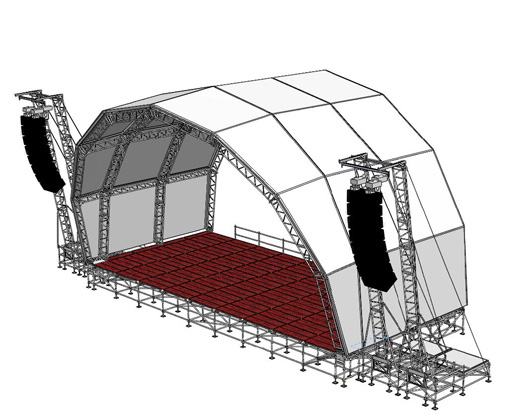
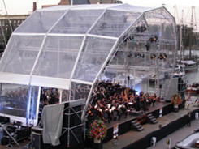

Podium
Voor het concert zal een bijzonder podium in de Dommel geplaatst worden. In samenwerking met Gigant Stage Builders zal een groot overdekt boogpodium worden opgebouwd. Om het podium op te bouwen zullen in totaal drie lange dagen hard werken nodig zijn. Eerst zal de podiumvloer direct in de Dommel worden gebouwd. De volgende dag wordt op die podiumvloer de boog opgebouwd. Om die boog omhoog te hijsen zal een forse hijskraan nodig zijn, die op 50 meter afstand de hele constructie op moet kunnen tillen – over het water heen. Onder deze boog ontstaat een podium van 9 bij 18 meter, waar orkesten en koren tot 90 musici op passen. De boog is in totaal 12 meter hoog, en wordt vol gehangen met licht- en geluidsapparatuur. De muziek zal zo overal voor het publiek op de oevers met goede geluidskwaliteit te horen zijn.Bovendien zijn de laatste optredens door ESMG Quadrivium prachtig verlicht.  De locatie bij het Van Abbemuseum, in combinatie met het boogpodium zal een schitterend decor vormen voor het concert. Om het effect te versterken worden transparante zeilen in de constructie gehesen, waardoor de strak vormgegeven architectuur van het Van Abbemuseum zichtbaar zal blijven.